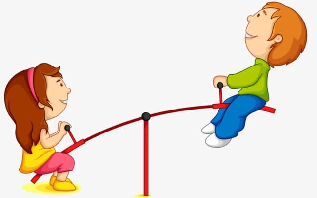
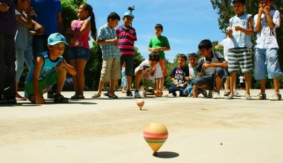
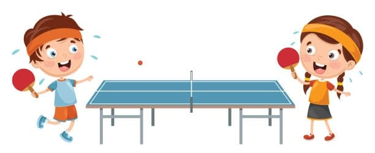
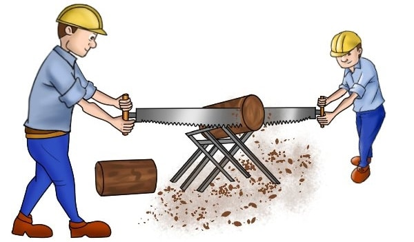
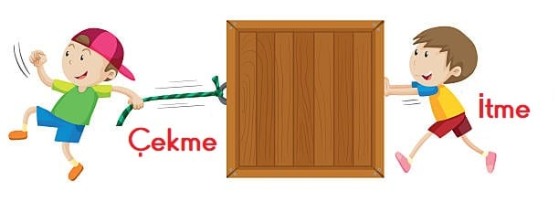

3.ÜNİTE
VARLIKLARIN HAREKET ÖZELLİKLERİ
Hareket yetenekleri farklı farklı olsa da yeryüzündeki bütün canlılar kendiliğinden hareket edebilirler.
Hareket etmek canlıların ortak özelliklerindendir.
İnsanlar ve hayvanlar; yürüyerek, koşarak, zıplayarak, sürünerek veya yüzerek hareket ederler.
Bitkilerin hareketi insanlara ve hayvanlara göre farklıdır. Bitkiler yapraklarını Güneş’e doğru çevirmesiyle ve köklerinin suya yönelmesiyle hareket ederler.
Cansız varlıklar ise; ancak dışarıdan bir etki ile hareket edebilirler. Örneğin, ayakkabımız ayağımızda olmadığı sürece hareketsizdir, ayağımıza giydiğimizde bizim adımlarımızla hareket kazanır.
HAREKET ÇEŞİTLERİ
Varlıkların hareketlerini hızlanan ve yavaşlayan hareket, sallanma hareketi, dönme hareketi ve yön değiştirme hareketi olarak dört grupta inceleyebiliriz.
1. Hızlanan ve Yavaşlayan Hareket
Canlı ya da cansız varlıkların hızlarını arttırarak hareket etmelerine hızlanan hareket denir. Hızlarını azaltarak hareket etmelerine ise yavaşlayan hareket denir. Örneğin uçak kalkarken hızlanma, iniş yaparken ise yavaşlama hareketi yapar.
2. Sallanma Hareketi
Bir varlığın peş peşe ileri-geri veya aşağı-yukarı yönde tekrarlayarak yaptığı harekete sallanma hareketi denir. Parkta sallandığımız salıncak, tahterevalli, lunaparklardaki gondolla yapılan hareket sallanma hareketine örnektir
3. Dönme Hareketi
Dünya’nın kendi etrafında yaptığı hareket dönme hareketidir. Topaç, bisiklet pedalı, rüzgar türbini, blender ve vantilatör gibi araçların hareketi dönme hareketine örnek olarak verilebilir.
4. Yön Değiştirme Hareketi
Bir varlığın ilerlediği yönün değişmesine yön değiştirme hareketi denir. Labirent içinde yapılan hareket, masa tenisi ve voleybol oynarken topun oyuncular arasındaki hareketi yön değiştirme hareketine örnektir.
3.2. CİSİMLERİ HAREKET ETTİRME VE DURDURMA
Kuvvet Nedir?
Hareket eden cisimleri durduran, duran cisimleri harekete geçiren itme veya çekme şeklindeki
etkiye kuvvet denir. Cisimlere itme ve çekme kuvveti uygulanır. Cisimleri iterek kendimizden
uzaklaştırır, çekerek kendimize yaklaştırırız. Günlük hayatımızda birçok işte itme-çekme kuvvetini
kullanırız.
Örneğin testere ile çalışan ustalar testereye hem itme hem de çekme kuvveti uygularlar.
İtme ve Çekme Bir Kuvvettir
Kapıyı, pencereyi ve çekmeceyi kapatırken itme kuvveti uygularız. Kumanda ve bilgisayar tuşlarına basarken itme kuvveti uygularız. Futbolcular, voleybolcular şut çekerken topa itme kuvveti uygular.
Bahçeden meyve toplarken çekme kuvveti uygularız. Kapıyı, pencereyi ve çekmeceyi açarken çekme kuvveti uygularız.
Kuvvet, varlıkların hızlanmasına, yavaşlamasına, durmasına, yönünün ve şeklinin değişmesine veya dönmesine neden olabilir
Hareketli Cisimlerin Sebep Olabileceği Tehlikeli Durumlar
Hareketli cisimler tehlikeli durumlar oluşturabilir. Hızlı hareket eden veya dönen cisimlere dokunmak, onları durdurmaya çalışmak kazalara neden olabilir
- Kapı ve pencerelerin hızla ve ani bir şekilde açılması veya kapanması ciddi yaralanmalarasebep olabilir.
- Çığ, sel, deprem gibi felaketler varlıkları harekete geçirerek can ve mal kaybına sebep olabilir.
- Hareket halindeki bir vantilatör pervanesini durdurmaya çalışmak yaralanmalara sebep olabilir.
- Aşırı hız ve ani fren gibi durumlar trafik kazalarına, can ve mal kaybına sebep olabilir.
- Teneffüste koridorlarda koşarak hareket ettiğinizde durmakta olan bir öğrenciye çarpabilirsiniz.